Soru 1Cevap: A
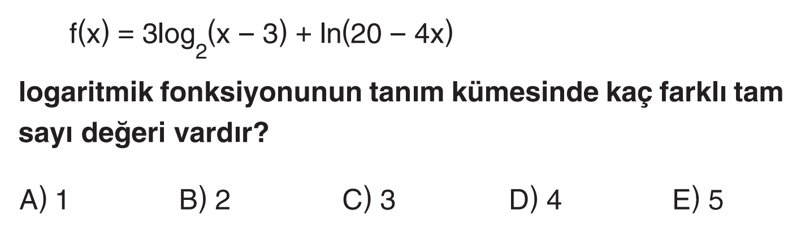
Çözüm
- $x-3\gt0\Rightarrow x\gt3$.
- $20-4x\gt0\Rightarrow x\lt5$.
- $(3,5)$'te yalnız $4$: $1$ tam sayı (A).
Cevap: A
Soru 2Cevap: A
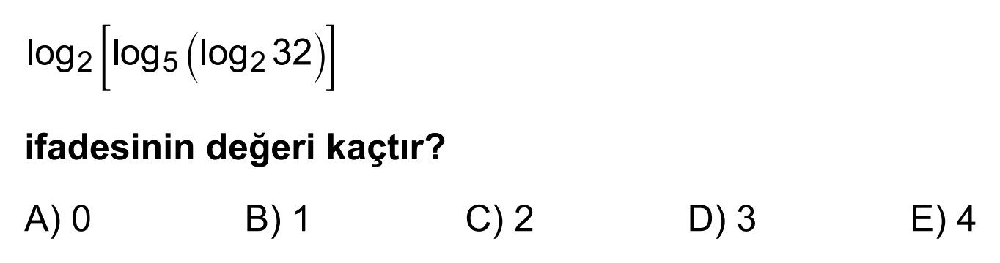
Çözüm
- $\log_232=5$.
- $\log_55=1$.
- $\log_21=0$ (A).
Cevap: A
Soru 3Cevap: D
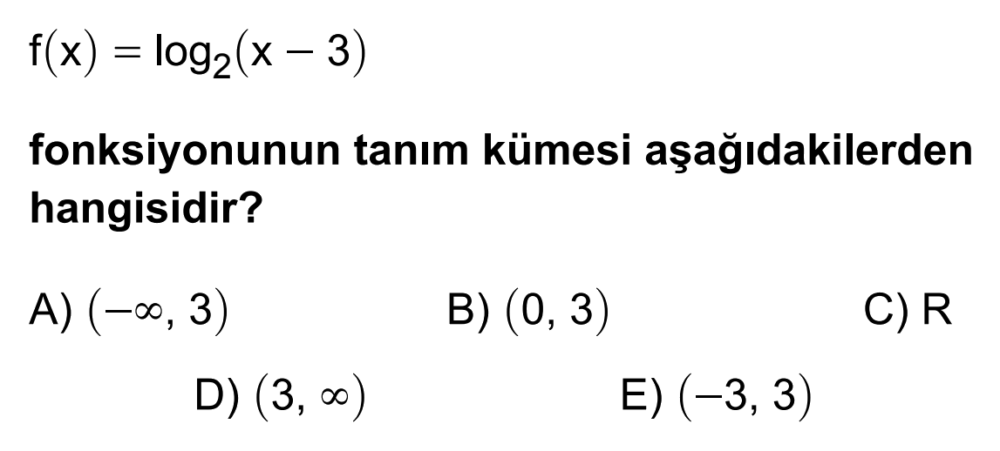
Çözüm
- $x-3\gt0$.
- $x\gt3$.
- $(3,\infty)$ (D).
Cevap: D
Soru 4Cevap: A
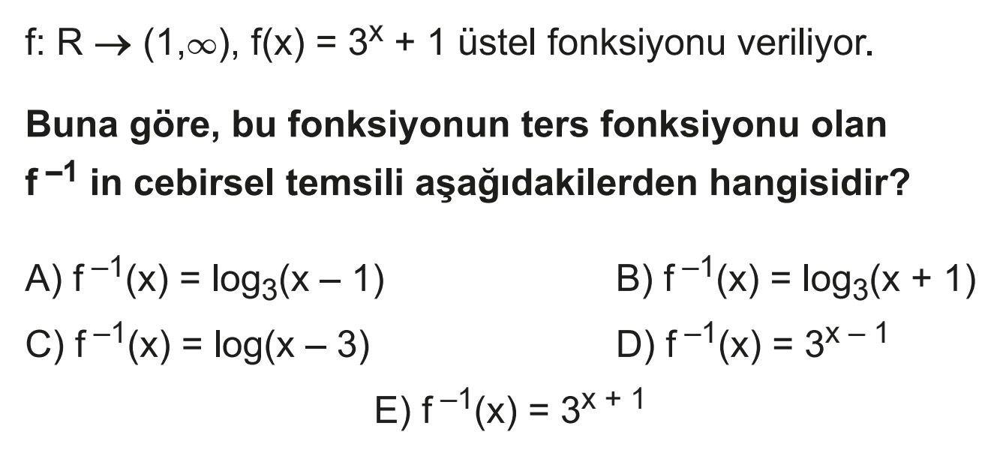
Çözüm
- $y=3^x+1\Rightarrow3^x=y-1$.
- $x=\log_3(y-1)$.
- $f^{-1}(x)=\log_3(x-1)$ (A).
Cevap: A
Soru 5Cevap: A
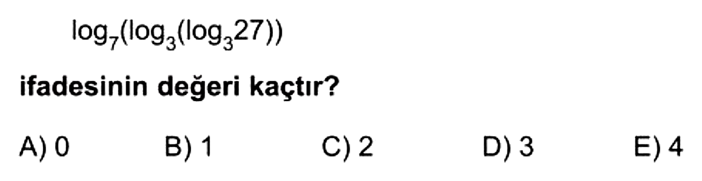
Çözüm
- $\log_327=3$.
- $\log_33=1$.
- $\log_71=0$ (A).
Cevap: A
Soru 6Cevap: C
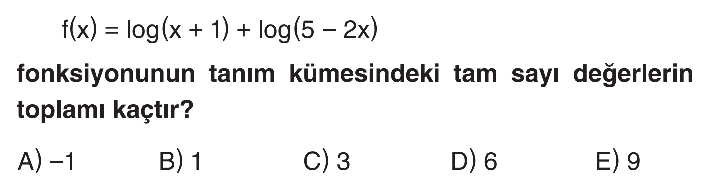
Çözüm
- $x+1\gt0\Rightarrow x\gt-1$.
- $5-2x\gt0\Rightarrow x\lt\tfrac52$.
- Tam sayılar $0,1,2$; toplam $3$ (C).
Cevap: C
Soru 7Cevap: E
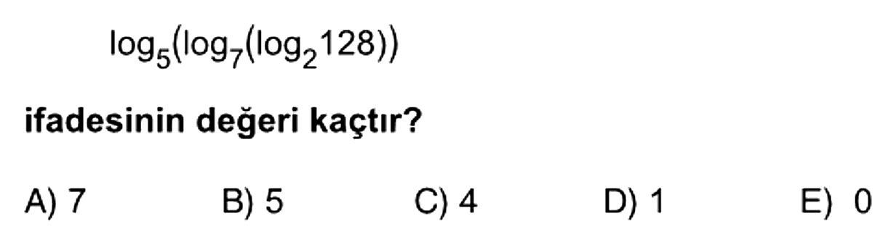
Çözüm
- $\log_2128=7$.
- $\log_77=1$.
- $\log_51=0$ (E).
Cevap: E
Soru 8Cevap: A
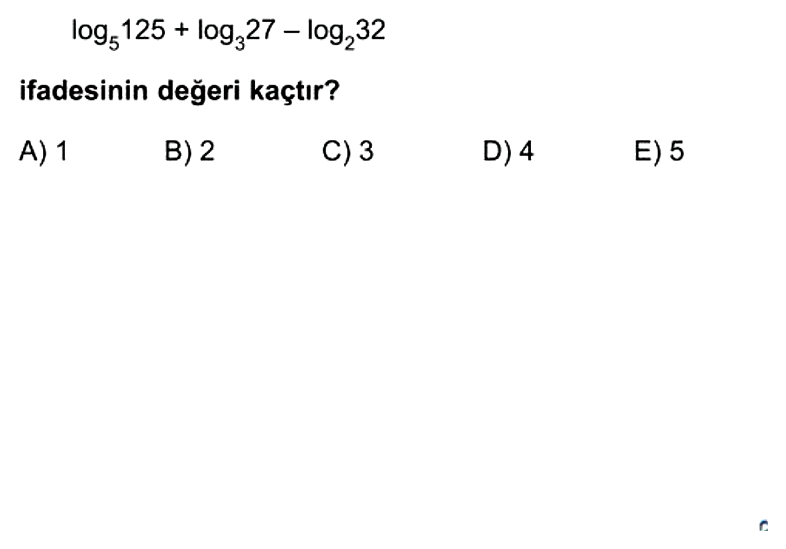
Çözüm
- $\log_5125=3$, $\log_327=3$.
- $\log_232=5$.
- $3+3-5=1$ (A).
Cevap: A
Soru 9Cevap: E
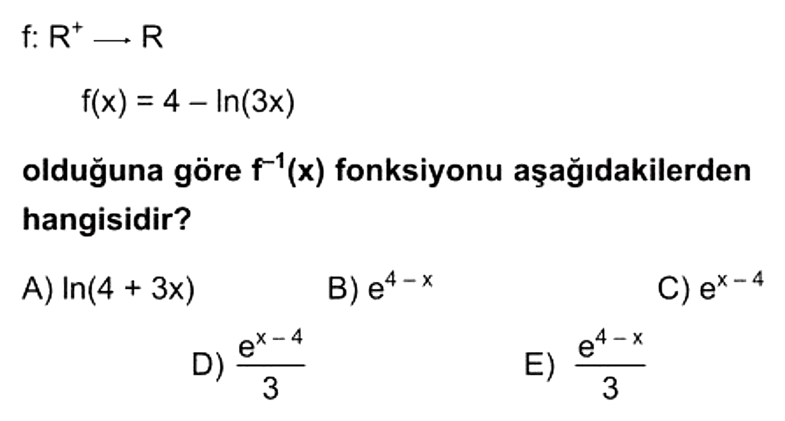
Çözüm
- $y=4-\ln3x\Rightarrow\ln3x=4-y$.
- $3x=e^{4-y}$.
- $f^{-1}(x)=\dfrac{e^{4-x}}3$ (E).
Cevap: E
Soru 10Cevap: C
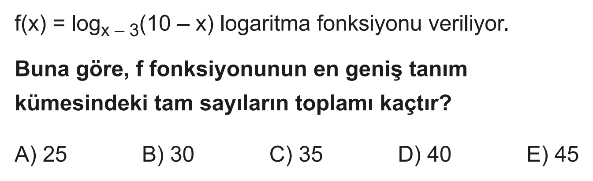
Çözüm
- Taban: $x-3\gt0$ ve $x-3\ne1\Rightarrow x\gt3$, $x\ne4$.
- İç: $10-x\gt0\Rightarrow x\lt10$.
- Tam sayılar $5,6,7,8,9$; toplam $35$ (C).
Cevap: C
Soru 11Cevap: D
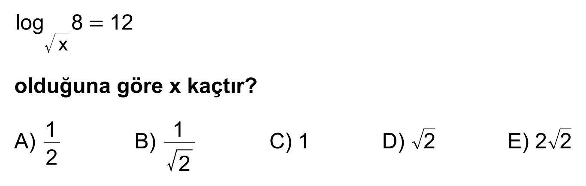
Çözüm
- $\log_{\sqrt x}8=12\iff(\sqrt x)^{12}=8$.
- $x^6=8=2^3$.
- $x=2^{1/2}=\sqrt2$ (D).
Cevap: D
Soru 12Cevap: B
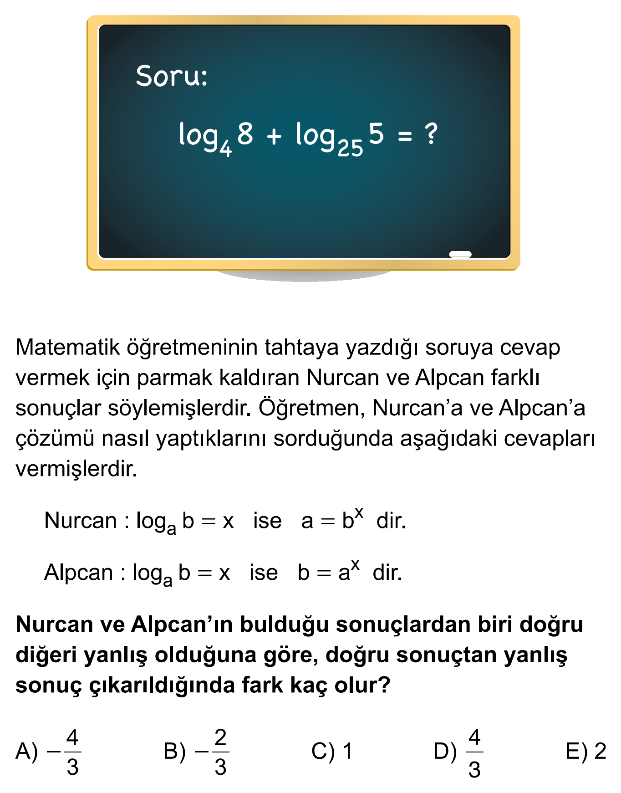
Çözüm
- Doğru tanım (Alpcan): $\log_ab=x\iff b=a^x$; $\log_48+\log_{25}5=\tfrac32+\tfrac12=2$.
- Nurcan'ın yolu: $4=8^x\Rightarrow x=\tfrac23$, $25=5^x\Rightarrow x=2$; toplam $\tfrac83$.
- Fark $2-\tfrac83=-\tfrac23$ (B).
Cevap: B
Soru 13Cevap: B
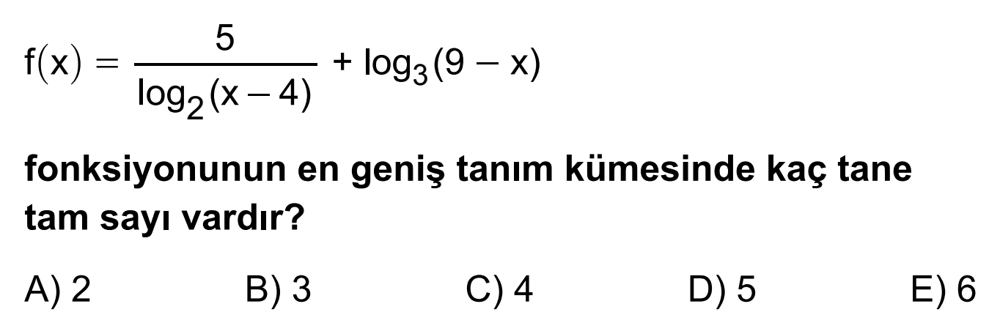
Çözüm
- $x-4\gt0$ ve payda $\log_2(x-4)\ne0\Rightarrow x\gt4$, $x\ne5$.
- $9-x\gt0\Rightarrow x\lt9$.
- $6,7,8$: $3$ tam sayı (B).
Cevap: B
Soru 14Cevap: D
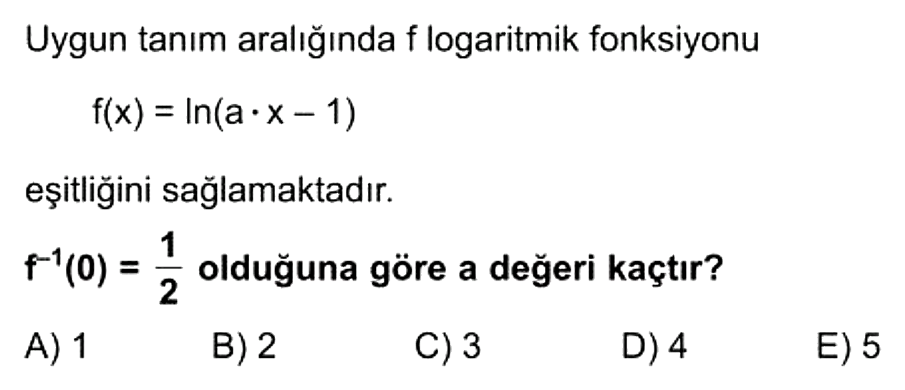
Çözüm
- $f^{-1}(0)=\tfrac12\iff f\left(\tfrac12\right)=0$.
- $\ln\left(\tfrac a2-1\right)=0\Rightarrow\tfrac a2-1=1$.
- $a=4$ (D).
Cevap: D
Soru 15Cevap: D
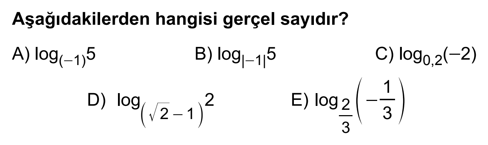
Çözüm
- Taban pozitif ve $1$'den farklı, iç pozitif olmalı.
- $-1$, $|{-1}|=1$ taban olamaz; $-2$ ve $-\tfrac13$ iç olamaz.
- $\sqrt2-1\in(0,1)$ taban olabilir, iç $2\gt0$: D.
Cevap: D
Soru 16Cevap: E
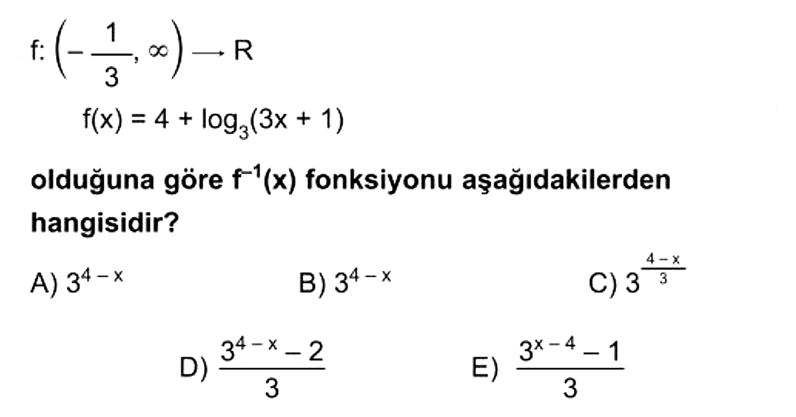
Çözüm
- $y=4+\log_3(3x+1)\Rightarrow3x+1=3^{y-4}$.
- $x=\dfrac{3^{y-4}-1}3$.
- $f^{-1}(x)=\dfrac{3^{x-4}-1}3$ (E).
Cevap: E
Soru 17Cevap: B
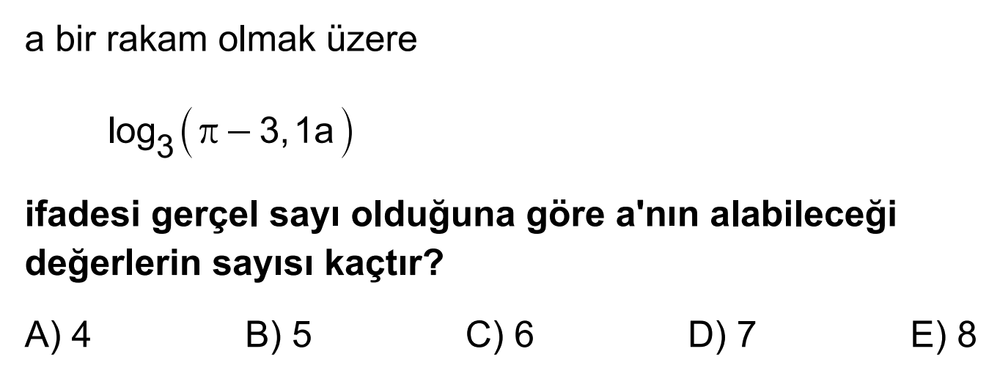
Çözüm
- $\pi-3{,}1a\gt0\Rightarrow3{,}1a\lt3{,}14159\ldots$
- $a$ rakam: $3{,}10;\,3{,}11;\dots;3{,}14\lt\pi$, $3{,}15\gt\pi$.
- $a\in\{0,1,2,3,4\}$: $5$ değer (B).
Cevap: B
Soru 18Cevap: E
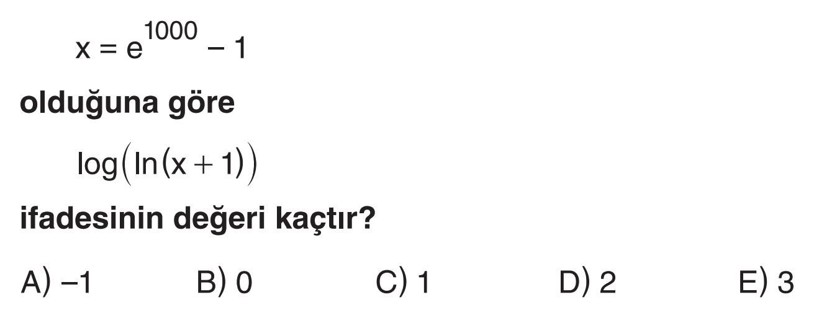
Çözüm
- $x+1=e^{1000}\Rightarrow\ln(x+1)=1000$.
- $\log1000=3$.
- Cevap $3$ (E).
Cevap: E
Soru 19Cevap: C
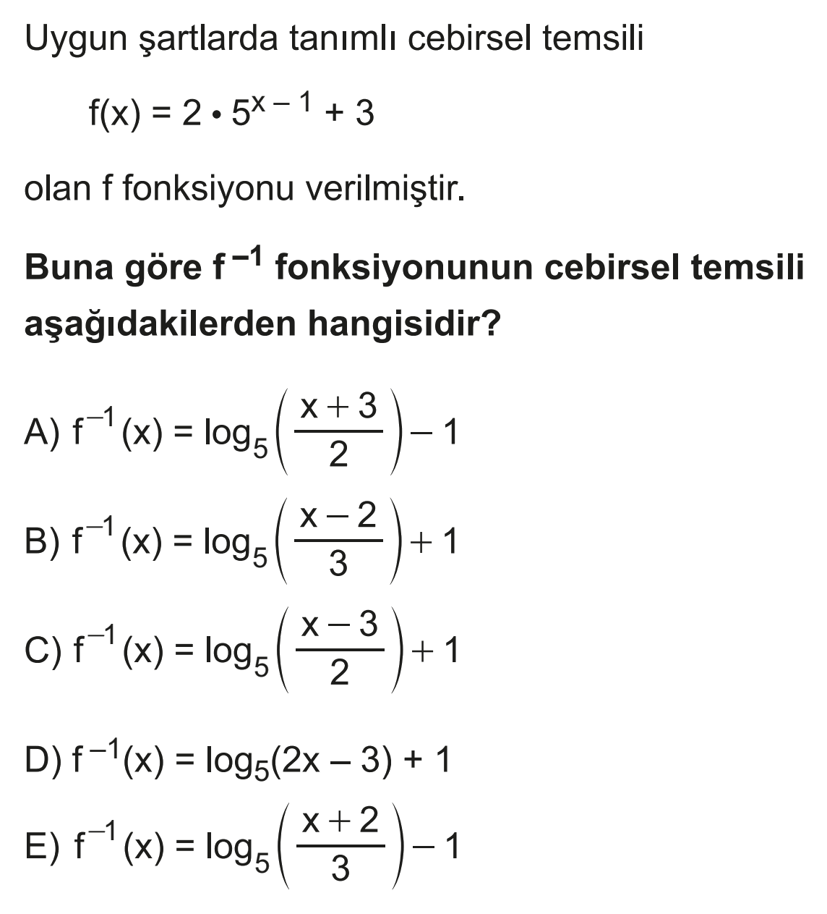
Çözüm
- $y=2\cdot5^{x-1}+3\Rightarrow5^{x-1}=\dfrac{y-3}2$.
- $x-1=\log_5\dfrac{y-3}2$.
- $f^{-1}(x)=\log_5\left(\dfrac{x-3}2\right)+1$ (C).
Cevap: C
Soru 20Cevap: B
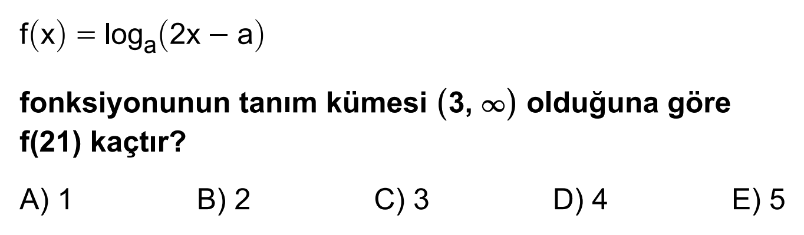
Çözüm
- $2x-a\gt0\Rightarrow x\gt\tfrac a2=3\Rightarrow a=6$.
- $f(21)=\log_6(42-6)=\log_636$.
- $=2$ (B).
Cevap: B
Soru 21Cevap: A
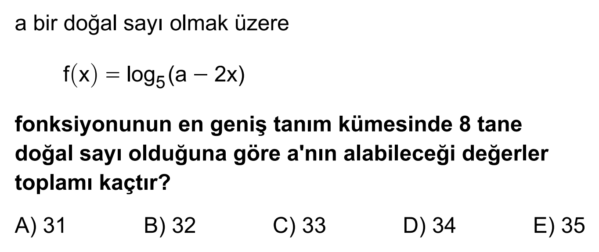
Çözüm
- $a-2x\gt0\Rightarrow x\lt\tfrac a2$.
- $8$ doğal sayı ($0,\dots,7$): $7\lt\tfrac a2\le8\Rightarrow14\lt a\le16$.
- $a=15,16$; toplam $31$ (A).
Cevap: A
Soru 22Cevap: D
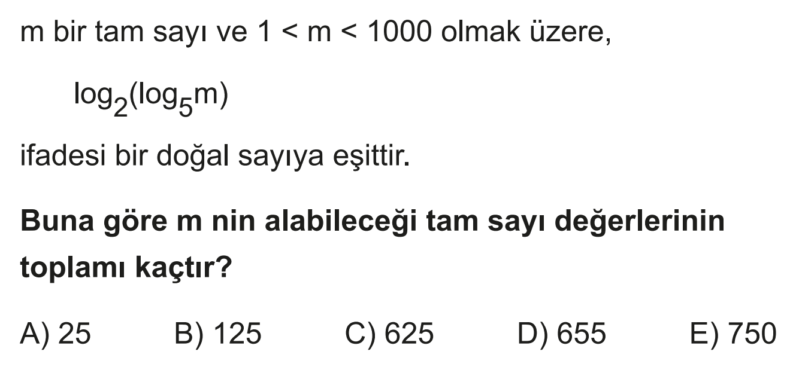
Çözüm
- $\log_2(\log_5m)=n\in\mathbb N\Rightarrow\log_5m=2^n$.
- $m=5^{2^n}$: $5$, $25$, $625$ ($5^8\gt1000$).
- Toplam $655$ (D).
Cevap: D
Soru 23Cevap: E
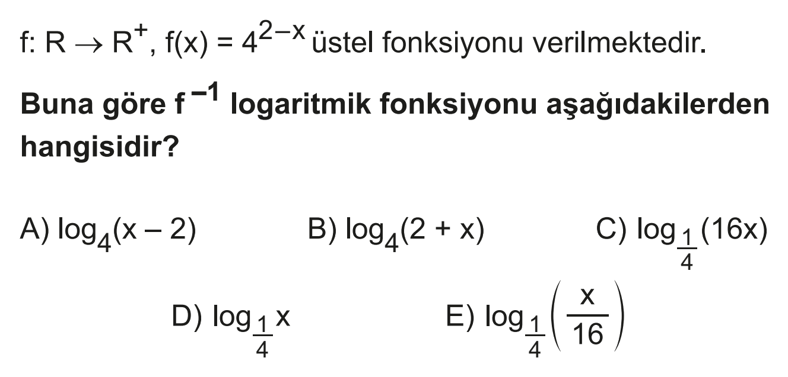
Çözüm
- $y=4^{2-x}\Rightarrow2-x=\log_4y$.
- $x=2-\log_4y=\log_4\dfrac{16}y=\log_{1/4}\dfrac y{16}$.
- $f^{-1}(x)=\log_{1/4}\left(\dfrac x{16}\right)$ (E).
Cevap: E
Soru 24Cevap: A
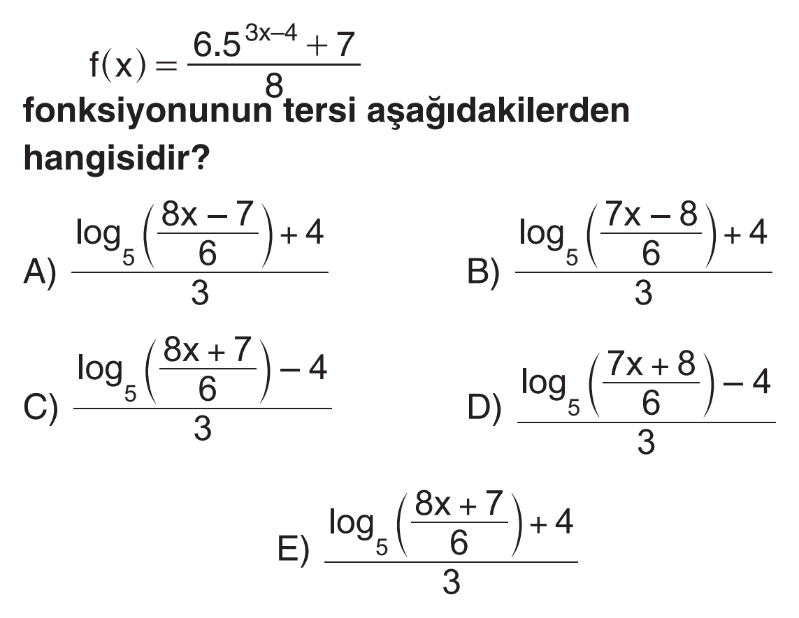
Çözüm
- $y=\dfrac{6\cdot5^{3x-4}+7}8\Rightarrow5^{3x-4}=\dfrac{8y-7}6$.
- $3x-4=\log_5\dfrac{8y-7}6\Rightarrow x=\dfrac{\log_5\frac{8y-7}6+4}3$.
- $x$ ile $y$ yer değiştirir: A.
Cevap: A